To continue our search for additional conditions (besides being an
extremal) which are necessary for a piecewise
 curve
curve  to be a strong minimum, we now introduce a new concept. For a given Lagrangian
to be a strong minimum, we now introduce a new concept. For a given Lagrangian
 , the
Weierstrass excess function, or
, the
Weierstrass excess function, or  -function, is defined
as
-function, is defined
as
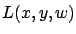
, viewed as a function of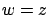
. This gives the geometric interpretation of the
The Weierstrass necessary condition for a strong minimum
states that if
 is a strong minimum, then
is a strong minimum, then
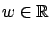
. The geometric meaning of this condition is that for each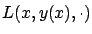
lies above its tangent line at
The Weierstrass necessary condition can be proved as follows.
Suppose that a curve  is a strong minimum. Let
is a strong minimum. Let
 be a noncorner point of
be a noncorner point of  , let
, let
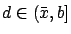
be such that the interval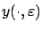
, parameterized by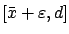
. The precise definition is
It is clear that
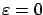
. We will now show that the right-sided derivative of this function at exists and equals
Noting that the behavior of
outside the interval
 does not depend on
does not depend on
 , we have
, we have
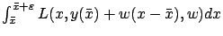
and its derivative is simply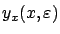
,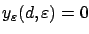
and so the first term in (3.15) is 0. Another consequence of (3.8) is the relation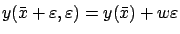
. Differentiating it with respect to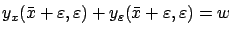
, or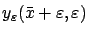
into the second term in (3.15), that term becomes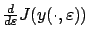
is given by the sum of (3.11), (3.12), the integral (with the minus sign) in (3.14), and (3.16). Setting and rearranging terms, we arrive at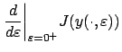 |
||
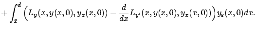 |
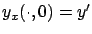
. The integral on the second line of the previous formula thus equals

because
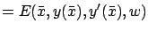 |
Weierstrass introduced the above necessary condition during his 1879 lectures on
calculus of variations. His original proof relied on an additional assumption
(normality) which was subsequently removed by McShane in 1939. Let us now
take a few moments to reflect on
the perturbation used in the proof we just gave. First, it is important to observe
that the perturbed curve
is close to the original curve  in the sense
of the 0-norm, but not necessarily in the sense of the 1-norm. Indeed,
it is clear that
in the sense
of the 0-norm, but not necessarily in the sense of the 1-norm. Indeed,
it is clear that
 as
as
 ; on the other hand,
the derivative of
for
; on the other hand,
the derivative of
for  immediately to the right of
immediately to the right of  equals
equals  , hence
, hence
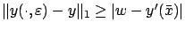
for all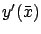
. Note also that the first variation was not used in the proof. Thus we have already departed significantly from the variational approach which we followed in Chapter 2. Derived using a richer class of perturbations, the Weierstrass necessary condition turns out to be powerful enough to yield as its corollaries the Weierstrass-Erdmann corner conditions from Section 3.1.1 as well as Legendre's condition from Section 2.6.1.
When solving this exercise, the reader should keep the following points in mind.
First, we know from Exercise 3.1
that the first Weierstrass-Erdmann corner condition is necessary
for weak extrema as well. This condition should thus follow directly from
the fact that  is an extremal--i.e., satisfies the integral form (2.23) of the Euler-Lagrange equation--without the need
to apply the Weierstrass necessary condition. The second Weierstrass-Erdmann
corner condition,
on the other hand, is necessary only for strong extrema, and deducing
it requires
the full power of the Weierstrass necessary condition (including
a further analysis of what the latter implies for corner points). As for Legendre's condition,
it can be derived from the local version of the
Weierstrass necessary condition with
is an extremal--i.e., satisfies the integral form (2.23) of the Euler-Lagrange equation--without the need
to apply the Weierstrass necessary condition. The second Weierstrass-Erdmann
corner condition,
on the other hand, is necessary only for strong extrema, and deducing
it requires
the full power of the Weierstrass necessary condition (including
a further analysis of what the latter implies for corner points). As for Legendre's condition,
it can be derived from the local version of the
Weierstrass necessary condition with  restricted to be close to
restricted to be close to  for a given
for a given  , thus confirming that
Legendre's condition is also necessary for weak extrema. Finally, when
, thus confirming that
Legendre's condition is also necessary for weak extrema. Finally, when  is a
corner point, Legendre's
condition should read
is a
corner point, Legendre's
condition should read
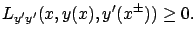
The perturbation used in the above proof of the Weierstrass necessary condition is already quite close to the ones we will use later in the proof of the maximum principle. The main difference is that in the proof of the maximum principle, we will not insist on bringing the perturbed curve back to the original curve after the perturbation stops acting. Instead, we will analyze how the effect of a perturbation applied on a small interval propagates up to the terminal point.
There is a very insightful reformulation of the Weierstrass necessary condition which reveals its direct connection to the Hamiltonian maximization property discussed at the end of Section 2.6.1 (and thus to the maximum principle which we are steadily approaching). Let us write our Hamiltonian (2.63) as
Then a simple manipulation of (3.6) allows us to bring the
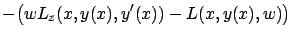 |
||
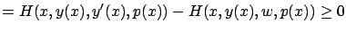 |
consistent with our earlier definition of the momentum (see Section 2.4.1). Therefore, the Weierstrass necessary condition simply says that if
Combining the Weierstrass necessary condition with the sufficient condition for a weak minimum from Section 2.6.2, one can obtain a sufficient condition for a strong minimum. The precise formulation of this condition requires a new concept (that of a field) and we will not develop it. While sufficient conditions for optimality are theoretically appealing, they tend to be less practical to apply compared to necessary conditions; we already saw this in Section 2.6.2 and will see again in Chapter 5.